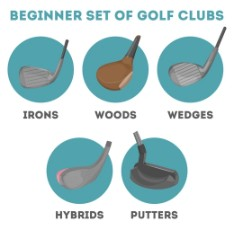
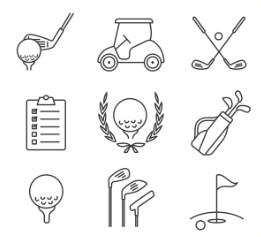

Gear & Beginner Tips
Golf Club Guide
- Driver: For long-distance tee shots
- Irons: For mid-range shots and accuracy
- Wedges: For chipping and short-range shots
- Putter: Used on the green to hole the ball
Beginner Swing Tips
Start with your stance: feet shoulder-width apart and knees slightly bent. Grip the club gently but firmly. Focus on a smooth backswing and follow-through — don't just swing hard. Practice often!
Gear Checklist
- Beginner club set
- Golf balls
- Tees
- Golf glove
- Ball marker & divot repair tool